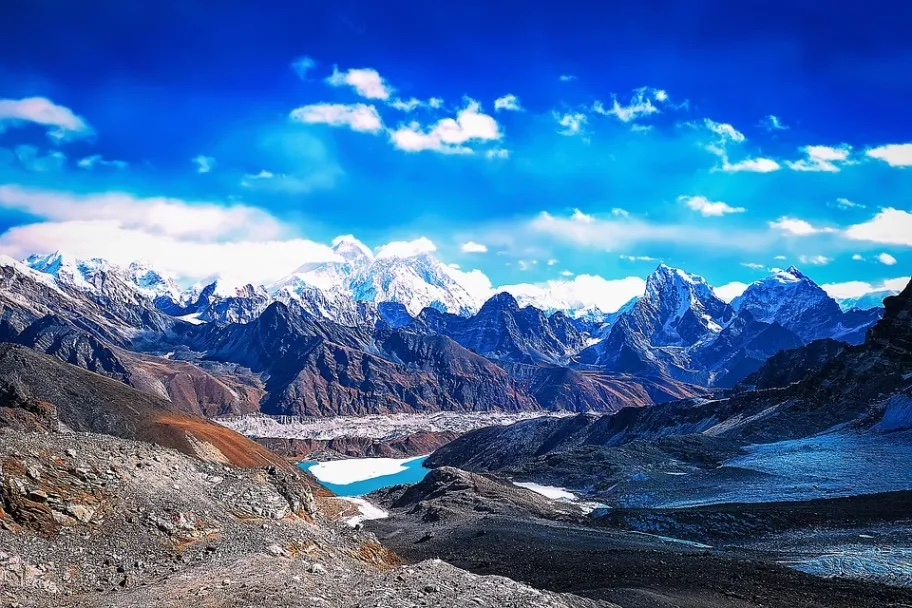

- Mount Everest Base Camp, Nepal
- Jotunheimen Mountains, Norway
- Denali National Park, USA
Mount Everest Base Camp, Nepal

There are fourteen mountains on this planet that are higher than
8,000 meters and ten of those mountains are within the Himalayas. At
8,848 meters (or 29,029 feet), Mount Everest stands above all others
as the tallest mountain in the world.
Joshua Hewitt (2020, May 16). The Top 20 Mountain Travel
Destinations in the World. Retrieved from
https://wanderlustphotosblog.com